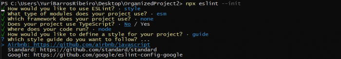

Organização e padronização com ESLint
Se você já sentiu que seu código está desorganizado, precisando de um padrão, saiba que você não está só. Essa é uma situação comum entre desenvolvedores, principalmente na fase inicial de aprendizado. Elaborar uma boa organização requer tempo e trabalho, mas é muito importante, especialmente quando a aplicação começa a crescer.
Para facilitar essa tarefa, foram criados algumas ferramentas, padrões e guias de estilo, como o ESLint. Nesse artigo vamos aprender a fazer organização e padronização com ESLint em aplicações Node.js, utilizando como IDE o Visual Studio Code.
Eslint
O ESLint é uma ferramenta de análise de código que, juntamente com a sua extensão de mesmo nome disponível no VSCode, permite identificar erros quanto ao padrão de escrita que definimos. Com ele você pode, por exemplo, definir que no seu código JavaScript as sentenças sempre terminarão com ponto e vírgula o que após o último elemento de um array sempre terá uma vírgula.
Em resumo, na prática o ESLint vai analisar seu código, com base no padrões que você definiu, e vai indicar
onde está diferente. Basta colocar o cursor do mouse em cima de cada erro para que o ESLint mostre a regra
que você esqueceu. Veja o exemplo a seguir:

Consequentemente, o processo de desenvolvimento melhora, pois não precisamos mais nos preocupar tanto em identificar problemas no padrão de escrita.
Instalando o EsLint
Caso esteja usando o NPM como gerenciador de pacotes, basta, na pasta raiz do seu projeto Node, executar o seguinte comando no terminal:
Perceba que estamos usando a flag -D, indicando ao NPM que o eslint é uma dependência de desenvolvimento, afinal, em produção não precisamos dele.
Em seguida, precisamos configurá-lo para que seja aplicado na nossa aplicação. Ou seja, vamos dar a ele informações sobre o nosso projeto e indicar quais regras de escrita queremos seguir.
Configurando EsLint
Antes que iniciemos a configuração, é importante definirmos qual estilo de programação queremos seguir. Mais a frente, você verá que podemos definir manualmente os parâmetros e tipos de verificação do ESLint. No entanto, configurar manualmente é bem trabalhoso e pode gerar dúvidas quanto ao estilo. Com isso em mente, tem se criado alguns styles guides (guias de estilo). Eu, particularmente, gosto do style guide da Airbnb, que é o estilo que usaremos como exemplo, mas sinta-se à vontade para escolher outro.
Para iniciarmos o processo de configuração do ESLint, precisamos, primeiro, inicializar o ESLint na aplicação. Seguem os devidos comandos para NPM:
A primeira configuração que precisamos definir é com qual propósito iremos usar o ESLint. O nosso propósito
será checar sintaxe, encontrar problemas e garantir a aplicação de um estilo de código. Ficará assim:

O próximo passo é definir que tipo de módulos usamos no nosso projeto. O Node.js ainda não aceita a sintaxe
de import/export do ES6, mas como eu estou usando o pacote Sucrase (fica a dica) para contornar isso, irei
escolhê-lo:

Se você estiver usando o Sucrase ou Babel para ativar a sintaxe import/export, então faça como eu. Mas se
não, escolha o padrão do Node.js, que é o CommonJS.
O próximo passo é definir se você está utilizando algum Framework. Como estamos num projeto Node.js, iremos
escolher None of these:
É importante também para o ESLint saber se estamos usando Typescript. Como eu não estou utilizando no meu
projeto, então respondi que não:

Agora, você precisa informar qual o destino do seu código. Se irá rodar no browser ou no Node. Já que o contexto aqui é usarmos ESLint com Node, então vamos selecionar Node mesmo. Para isso, com a tecla espaço, desselecione Browser e selecione Node e, depois, confirme com a tecla enter: 
Nessa etapa, deveremos definir o estilo que seguiremos no nosso código. Iremos escolher um estilo popular:

Na próxima etapa, irei escolher o style guide que mencionei anteriormente, o da Airbnb:
O estilo da Airbnb segue alguns padrões que já falamos, como pôr ponto e vírgula ao fim de cada setença de
código, vírgula após último elemento de um array ou depois do último atributo de um objeto, strings são
delimitadas por aspas simples… Para ver a lista de regras presentes no style guide da Airbnb, basta dar uma
olhada nesse link.
Continuando, agora definiremos o formato do arquivo no qual você poderá realizar algumas configurações
adicionais do ESLint. Nesse arquivo, também poderemos definir ou sobrescrever regras que ele irá analisar no
nosso projeto. Particularmente, gosto desse arquivo no formato JavaScript:

Após a etapa anterior, será perguntando a você se deseja instalar as dependências relacionadas ao style
guide escolhido. Confirme:
 Finalmente, temos o ESLint instalado e configurado com a excelente style guide da Airbnb. Agora, pra uma
completa experiência com essa tecnologia, é necessário integrá-la ao VS Code.
Finalmente, temos o ESLint instalado e configurado com a excelente style guide da Airbnb. Agora, pra uma
completa experiência com essa tecnologia, é necessário integrá-la ao VS Code.
Configurando Vs code com Eslint
Essa etapa é necessária para uma completa integração do ESLint e, assim, termos o processo de desenvolvimento de nossas aplicações facilitado.
O primeiro passo é instalar a extensão ESLint no VS Code. Para isso, no seu VS Code, clique no botão de extensões, pesquisar “eslint” e instale a extensão correspondente: Feito isso, reinicie o VS Code e passará a visualizar os avisos no código do seu projeto quando alguma regra do style guide da Airbnb for violada.
Um outro recurso que também podemos habilitar no ESLint e configurar para que funcione no VS Code é, sempre que salvarmos um arquivo, o ESLint fazer a correção automatica dos desvios às regras nesse arquivo. Claro que nem sempre ele será capaz de resolver tudo sozinho, mas na maioria das vezes ele tira de letra.
Para adicionarmos essa funcionalidade, precisamos alterar o arquivo settings.json do VS Code. Podemos
abri-lo indo no menu view e depois em command palette: